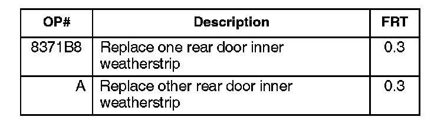
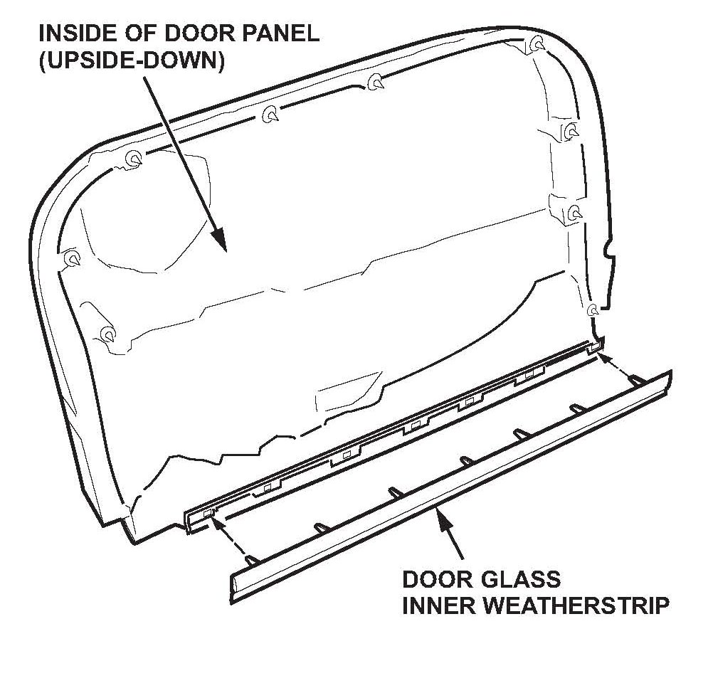

Body - Rear Windows Screech/Squeak When Operated
08-034July 3, 2008
Applies To:
2007 MDX - From VIN 2HNYD2...7H500001 thru 2HNYD2...7H526860
Rear Windows Screech or Squeak When Going Up or Down
SYMPTOM
There is a screeching or squeaking when raising or lowering the rear windows.
PROBABLE CAUSE
The end of the inner weatherstrip at the top of the door panel twists when the window is raised or lowered, and the window rubs against the rubber part of the inner weatherstrip.
CORRECTIVE ACTION
Replace the rear door inner weatherstrip on one or both rear doors.
PARTS INFORMATION
Rear Door Inner Weatherstrip:
P/N 72875-STX-A01 (Driver's side)
P/N 72835-STX-A01 (Passenger's side)
REQUIRED MATERIALS
EPT Sealer 5T (One roll repairs about 140 vehicles.)
P/N 06991-SA5-000
WARRANTY CLAIM INFORMATION
In warranty:
The normal warranty applies.

Failed Part: P/N 72875-STX-A01
Defect Code: 07403
Symptom Code: 04205
Skill Level: Repair Technician
Out of warranty:
Any repair performed after warranty expiration may be eligible for goodwill consideration by the District Parts and Service Manager or your Zone Office. You must request consideration, and get a decision, before starting work.
REPAIR PROCEDURE
Replace the rear door inner weatherstrip on the affected side(s).
1. Remove the rear door panel.
^ Refer to steps 1 thru 6 on page 20-22 of the 2007-08 MDX Service Manual, or
^ Online, enter keywords DOOR PANEL, and select Rear Door Panel Removal/Installation from the list.

2. Replace the rear door inner weatherstrip:
^ Remove the rear door inner weatherstrip by straightening the tabs with a screwdriver, noting the direction the tabs are bent. Remove any EPT sealer attaching the rear door inner weatherstrip to the door panel, then pull the weatherstrip off the door panel.
^ Install the rear door inner weatherstrip by pressing it against the door panel, then bend the tabs with your finger. Make sure you bend the tabs in the same direction as the original weatherstrip's tabs.
^ Cut two 35 mm x 10 mm pieces of EPT sealer, and attach one piece to each end of the inner weatherstrip and door panel as shown.
3. Install the door panel in the reverse order of removal, and note these items:
^ If any door panel clips are damaged or stress whitened, replace them with new ones.
^ If the door latch cable fastener is damaged, replace it.
^ With the door latch in its locked position, fix the latch cable to the cable fastener as shown below.
^ Make sure the electrical connectors are properly connected, and that the door latch cable is securely attached.
^ Make sure the window and the power door lock operate correctly.

Disclaimer